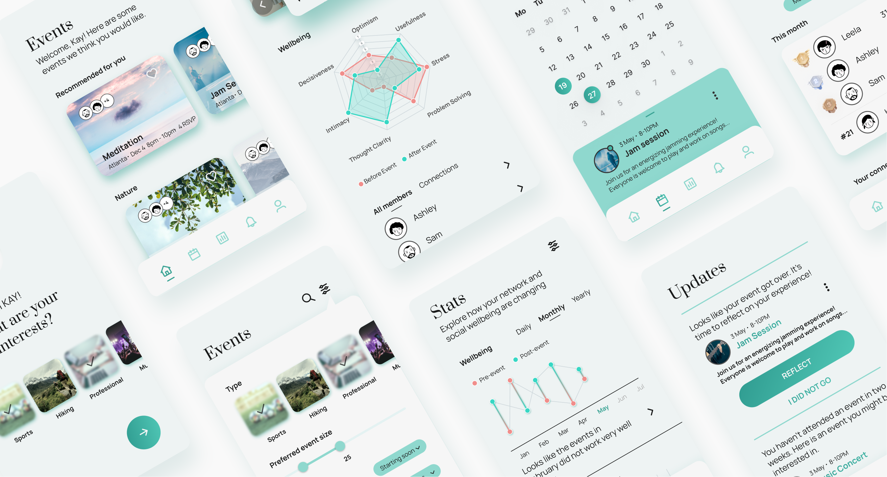
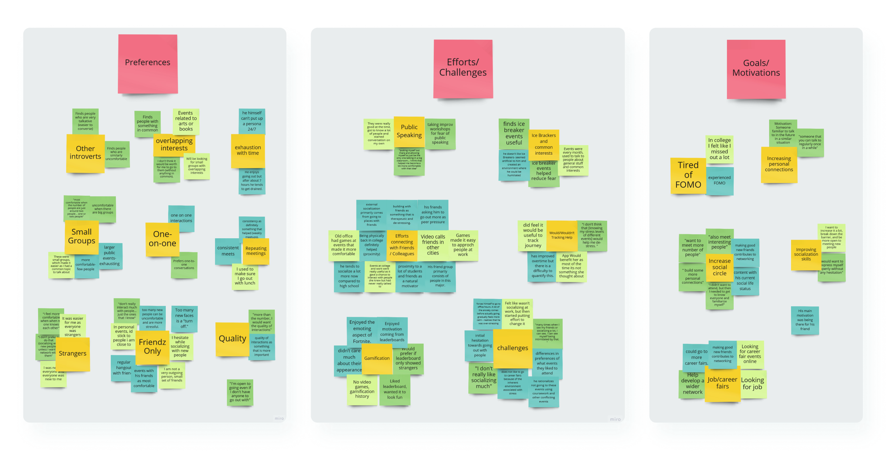
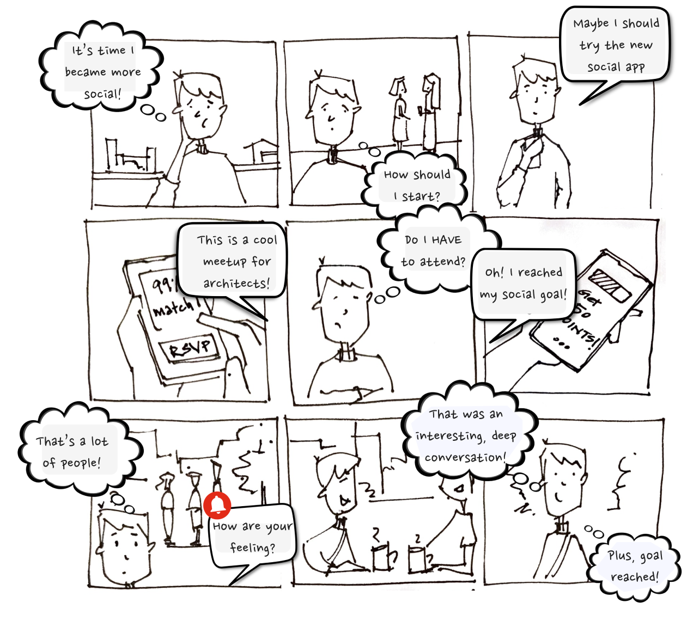
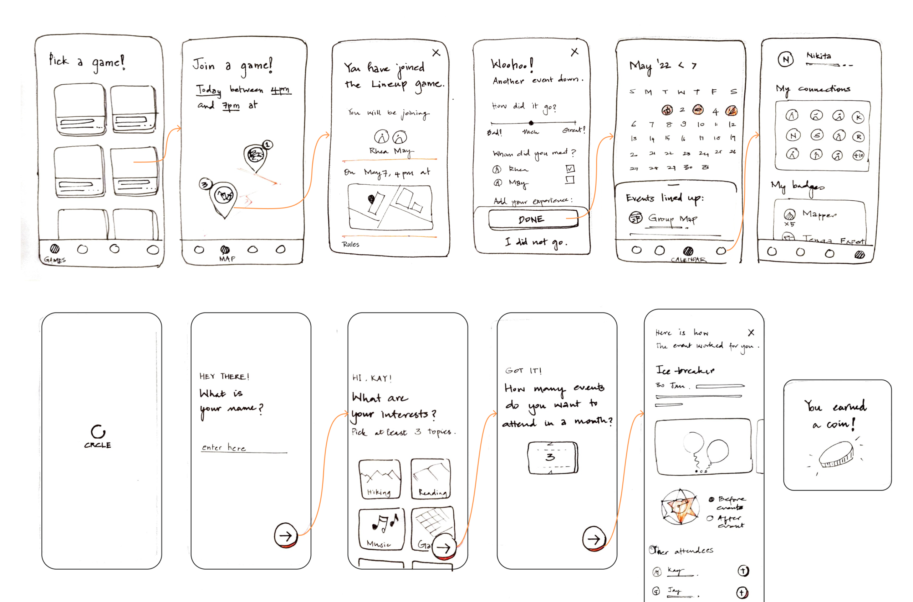

Problem
Our aim was to develop a solution to help introverts maintain a
balance between social and personal well-being, as part of our
class on Personal Health Informatics.
Results
We developed high-fidelity functional prototypes on Figma and
conducted user testing. The feedback we received highlighted
discrepancies in users' mental models, and we devised solutions to
bridge these gaps.

“I feel more comfortable when no one knows each other.”
With the help of literature review and semi-structured user
interviews, we defined the problem space to address.
Problem & Process
To understand the problem space, we began with a literature review
to explore the nature of introversion. We conducted semi-structured
interviews to capture the motivations and challenges faced by
introverts, which helped us identify broader themes and subsequent
implications. This process was followed by brainstorming narratives
that addressed these implications, creating low-fidelity prototypes,
and iterating based on user feedback before developing and testing
high-fidelity prototypes.

An organization of all the notes and quotes from the user interviews.
“These were small groups, which made it easier as I had a common topic
to talk about”

The storyboard for one of the ideas.
Themes and Design Implications
Through affinity diagramming with insights from the interviews, we
identified three broad themes: a preference for quality time to get to
know others, a need to push oneself to engage socially to improve, and
a motivation to enhance social skills and expand social circles. From
these insights, we identified six opportunities:
-
Find People with Similar Interests: Recommend events that align
with users’ interests and allow users to filter events based on
their comfort level.
-
Help Connect in Smaller Groups: Give users the option to connect
with a few other attendees via the app.
-
Qualitative Reflection: Use similarity in preferences for grouping
and making recommendations.
-
Quantitative Feedback on People and Events: Provide measurable
feedback on the growth of connections and the impact of events
attended.
-
Balance Personal and Social Well-being: Show insights on how
socialization affects their well-being, such as the frequency of
events and its impact on wellness.
-
Gamification to Motivate Initial Engagement: Use rewards, goals,
and leaderboards to motivate users at varying engagement levels.

The two low-fidelity prototypes on which we collected quick user
feedback to decide on the direction to go forward.
Although people appreciated the app's socialization and reflection
features, some found certain charts and data collection confusing.
Outcome
Using these six design implications, we iterated and tested our
prototypes. The final high-fidelity prototype testing revealed that
participants appreciated:
-
Easy Connections: The ability to chat and connect with others
through the app.
-
Grouping Before the Event: Positive responses to being grouped
with strangers beforehand.
-
Data Tracking: The capability to monitor their events,
connections, and changes over time.
Challenges
-
Understanding of Graphs: Participants struggled with interpreting
the graphs.
-
Transparency of Data Collection: Confusion about the necessity and
use of their data.
-
Leaderboard System: A unified leaderboard was found to be
demotivating for newer users.
Next steps
Based on the results, the design implications include enhanced context
for graphs and data entries, and leaderboards tailored to different
stages of user engagement.
Reflecting on the project, I wish we had explored broader and more
iterations during the ideation phase.
Please reach out to me at
nive.mathan21@gmail.com
to discuss the case study in detail.